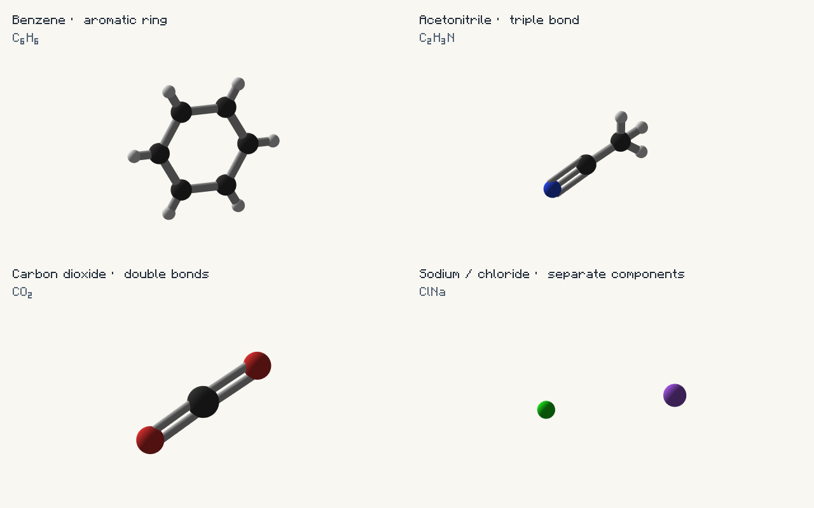
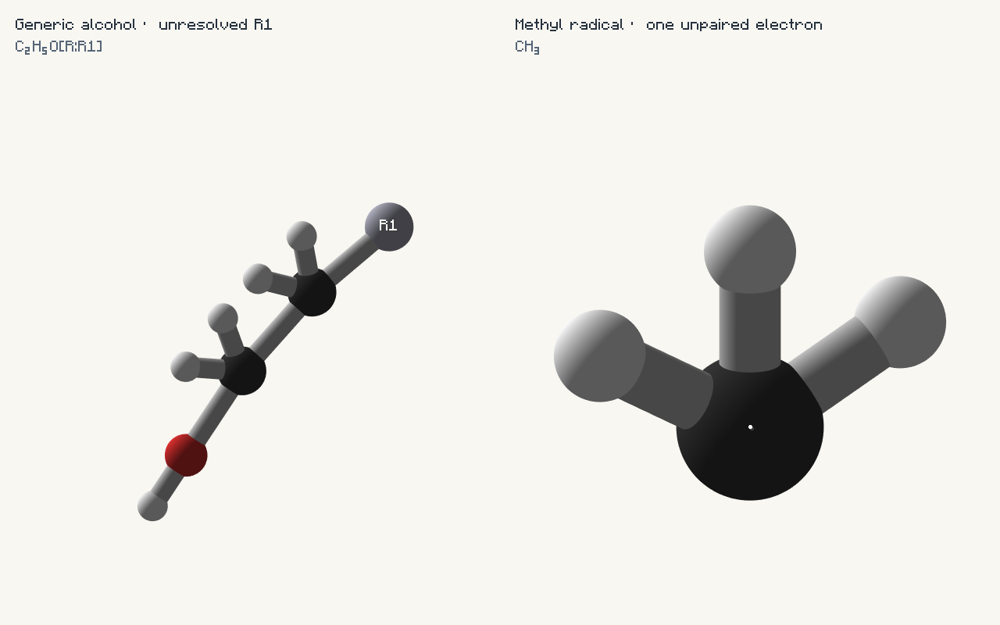
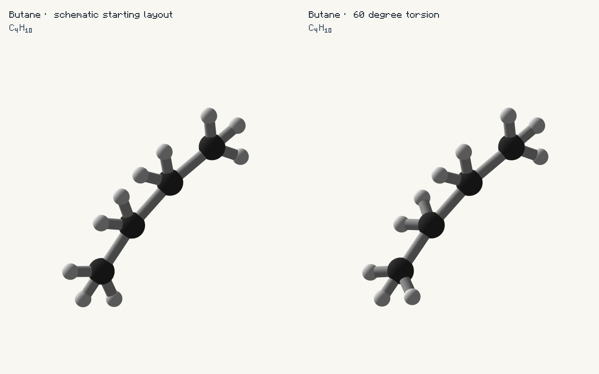

Add groups, radicals, and shape constraints to a molecule
Describe a molecule’s bonds with SMILES, mark an atom with unpaired electrons, or leave a group to fill in later. For a particular display shape, add bond-length and dihedral-angle constraints. These tools build a display model; they do not simulate a reaction.
Calls used in the examples
| Call or setting | Arguments | What it does |
|---|---|---|
MoleculeBuilder(id).smiles(text)
|
Namespaced molecule ID; SMILES string | Describe atoms and bonds using the supported notation below. |
owner(name).register(builder)
|
Owner name; molecule builder | Register the resulting definition through your addon’s owner. |
/avogadro reload |
No additional argument for the examples | Reload edited server JSON files; restart after ordinary startup-script edits. |
When you finish: A builder creates a model but does not add it to the
game. Java registrations use a name, called an owner, to group the definitions your mod
controls; choose your mod ID. A RegistrationJob lets you cancel pending work
or remove its installed set later. JSON and Groovy registrations use their file or script
loading rules instead. Keep drawing and exports in client code. SMILES authoring does not
simulate reactions or optimize a structure to its lowest-energy shape.
Java examples run in your host mod’s common initialization with
import io.. Groovy
examples belong in a GroovyScript post-init script; both sides need GroovyScript, but
connected clients need no local script. JSON is one definition per file under
config/; the filename supplies the path of the ID. Use / for
JSON changes; restart for script changes. The library registers none of these samples
automatically.
Choose the SMILES notation Avogadro accepts
| Feature | Example | Behavior |
|---|---|---|
| Organic elements / branching | CC(O)C | Implicit H follows the existing valence rules; a schematic layout is generated. |
| Single, double, triple bonds | CC, C=C, CC#N | Explicit multiplicity is rendered. The ordinary parser does not support quadruple-bond SMILES; use typed explicit bonds. |
| Aromatic atoms | c1ccccc1, [nH]1cccc1 | Existing schematic aromatic behavior is retained; aromatic links are drawn as single connections in the legacy layout, not an aromaticity/bond-order solver. |
| Ring closures | C1CCCCC1, C%12CCCCC%12 | Digits pair connections, not atoms; tetrahedral ring ordering is handled by the stereo parser. |
| Disconnected components | [Na+].[Cl-] | Both ions are rendered separately; the dot is not a bond and does not supply a crystal packing. |
| Bracket atoms / H | [C], [CH3], [NH4+] | Bracket H counts are explicit; charge does not automatically create examiner electron-shell data. |
| Isotope prefix | [13C] | The element is read correctly. Stereo input retains isotope mass for CIP; average-mass and nuclear-examiner APIs remain separate. |
| Tetrahedral chirality | C[C@H](O)C(=O)O | Validated 3D coordinates and R/S; see the dedicated chirality guide and limits. |
| External groups | *CCO, [*:1]CCO | Standard wildcard becomes an R or R1 placeholder, with no invented internal atoms or mass. |
| Unsupported forms | F/C=C/F, reaction >, CXSMILES | Directional-bond stereochemistry and reactions are rejected; do not treat this as a complete chemistry parser. |

AvogadroApi.owner("chemistry_guide").register(
new MoleculeBuilder("chemistry:benzene").smiles("c1ccccc1"));import io.github.wurtzitane.avogadro.api.*
mods.avogadro.molecules.register(
new MoleculeBuilder("chemistry:benzene").smiles("c1ccccc1")){
"name": "Benzene · aromatic ring",
"smiles": "c1ccccc1"
}AvogadroApi.owner("chemistry_guide").register(
new MoleculeBuilder("chemistry:nitrile").smiles("CC#N"));import io.github.wurtzitane.avogadro.api.*
mods.avogadro.molecules.register(
new MoleculeBuilder("chemistry:nitrile").smiles("CC#N")){
"name": "Acetonitrile · triple bond",
"smiles": "CC#N"
}AvogadroApi.owner("chemistry_guide").register(
new MoleculeBuilder("chemistry:carbon_dioxide").smiles("O=C=O"));import io.github.wurtzitane.avogadro.api.*
mods.avogadro.molecules.register(
new MoleculeBuilder("chemistry:carbon_dioxide").smiles("O=C=O")){
"name": "Carbon dioxide · double bonds",
"smiles": "O=C=O"
}AvogadroApi.owner("chemistry_guide").register(
new MoleculeBuilder("chemistry:ions").smiles("[Na+].[Cl-]"));import io.github.wurtzitane.avogadro.api.*
mods.avogadro.molecules.register(
new MoleculeBuilder("chemistry:ions").smiles("[Na+].[Cl-]")){
"name": "Sodium / chloride · separate components",
"smiles": "[Na+].[Cl-]"
}Mark a group you will fill in later
A placeholder uses element * and a visible label of 1–8 ASCII identifier
characters, such as R1, Ar or Side. It is a group attachment position, not a fictitious
element and not a hydrogen omission. It has no implicit hydrogens, nuclear model, specified
radical count or unique mass. Molecule rejects
unresolved groups; composition(structure) counts only known real atoms.

AvogadroApi.owner("chemistry_guide").register(
new MoleculeBuilder("chemistry:external_group").smiles("[*:1]CCO"));import io.github.wurtzitane.avogadro.api.*
mods.avogadro.molecules.register(
new MoleculeBuilder("chemistry:external_group").smiles("[*:1]CCO")){
"name": "Generic alcohol · unresolved R1",
"smiles": "[*:1]CCO"
}var part = new StructureBuilder();
int group = part.addRGroup("R1", 0, 0, 0);
int carbon = part.addAtom("C", 1.5, 0, 0);
part.bond(group, carbon).attachment("side_chain", group);
StructureFragment fragment = part.build();
Explicit atom JSON uses
{"e":"*",. To rename
a wildcard from SMILES, call builder., or set
"atom_. To resolve it, use the existing
fragment editor to replace the wildcard with a real atom, or remove it and attach a complete
fragment through the existing assembly/attachment API. Supply all missing atoms and bonds,
including hydrogen; resolution does not invent valence completion.
Mark an atom with unpaired electrons
AvogadroApi.owner("chemistry_guide").register(
new MoleculeBuilder("chemistry:radical").smiles("[CH3]").radical(0, 1));import io.github.wurtzitane.avogadro.api.*
mods.avogadro.molecules.register(
new MoleculeBuilder("chemistry:radical").smiles("[CH3]").radical(0, 1)){
"name": "Methyl radical · one unpaired electron",
"smiles": "[CH3]",
"atom_annotations": {
"0": {
"radical_electrons": 1
}
}
}
[CH3] provides the methyl atom inventory. The explicit
radical_ annotation supplies one unpaired electron and adds
a stationary, screen-facing dot attached to that atom’s moving position. Counts 0–4 are
accepted; zero clears an inherited radical. The count survives copies, fragment
transformations, JSON, synchronization, viewers and exports. It neither changes the bonds
nor synthesizes electron-shell configurations, charges or spin multiplicity. Lowercase
SMILES still means aromatic spelling, never radical shorthand.
On explicit atoms use {"e":"C","x":0,"y":0,"z":0,"radical_.
In a Structure, call radical(index, count). Labels
and dots use the active resource-pack font. Ordinary atoms keep their existing shaded
appearance.
Set a bond length or twist a chain

AvogadroApi.owner("chemistry_guide").register(
new MoleculeBuilder("chemistry:butane_gauche").smiles("CCCC").constraints(StructureConstraints.builder()
.bondLength(1, 2, 1.54).dihedral(0, 1, 2, 3, 60).build()));import io.github.wurtzitane.avogadro.api.*
mods.avogadro.molecules.register(
new MoleculeBuilder("chemistry:butane_gauche").smiles("CCCC").constraints(StructureConstraints.builder()
.bondLength(1, 2, 1.54).dihedral(0, 1, 2, 3, 60).build())){
"name": "Butane · 60 degree torsion",
"smiles": "CCCC",
"constraints": [
{
"type": "bond_length",
"atoms": [
1,
2
],
"length": 1.54
},
{
"type": "dihedral",
"atoms": [
0,
1,
2,
3
],
"degrees": 60.0
}
]
}Targets apply once during loading. Length translates the second bond endpoint’s connected component; torsion rotates the third endpoint’s side about the second-to-third bond. Positive torsion follows the right-hand rule around B→C, from the perpendicular B→A projection to C→D. Coordinates share one unit; the example interprets it as ångströms. The full graph remains present.
Use constraints. for reusable fragments, or
constraints. for loaded geometry with verified stereo.
In a structure recipe, add {"op":"constrain", to its
ordered operations. Ring bonds, collinear torsions, missing connections, nonfinite values
and conflicting final targets are rejected. There is no ring solver, collision resolution or
force-field minimization. At most 64 targets are allowed; lengths are positive and at most
10000 units.
Check the order in which annotations and constraints apply
-
Select one geometry source:
smiles, explicit atoms/bonds,structure, orcopy. -
Inline atom fields and
atom_attach explicit group/radical metadata. Top-level annotations override the corresponding inherited annotation; omitted indices remain unchanged.annotations -
Top-level
constraintsoperate on the resulting geometry. Labels and annotations remain attached to their atom indices. -
Matching fields such as
items,fluids, tags and material associations work as before. A generated sample can represent a generic structure, but it has no complete mass until its groups are resolved.
Ordinary SMILES retain written heavy-atom order with added hydrogens afterward. Stereo SMILES canonicalize atom order. Never assume a canonicalized center’s index: inspect the loaded graph before applying index-specific metadata. Unknown annotation/constraint fields and fractional indices fail explicitly. See the shared field reference for remaining schema details.
Choose explicit geometry for large models
Ordinary SMILES is bounded to 4096 atoms including hydrogen and 32 million pair operations during layout (500 × heavy atoms × (heavy atoms − 1) / 2). Larger models should supply explicit geometry or reusable structure recipes. Invalid or unfinished branches, rings, brackets and bonds are rejected before publication. H0 means zero bracket hydrogens; unsupported bracket suffixes and conflicting ring bond orders are errors.
Derived formulas display an unresolved placeholder as [R:label], keeping a
group named C separate from real carbon. Explicit stereo snapshots use the validated
stereochemistry field; ordinary topology edits do not guess replacement R/S
labels.